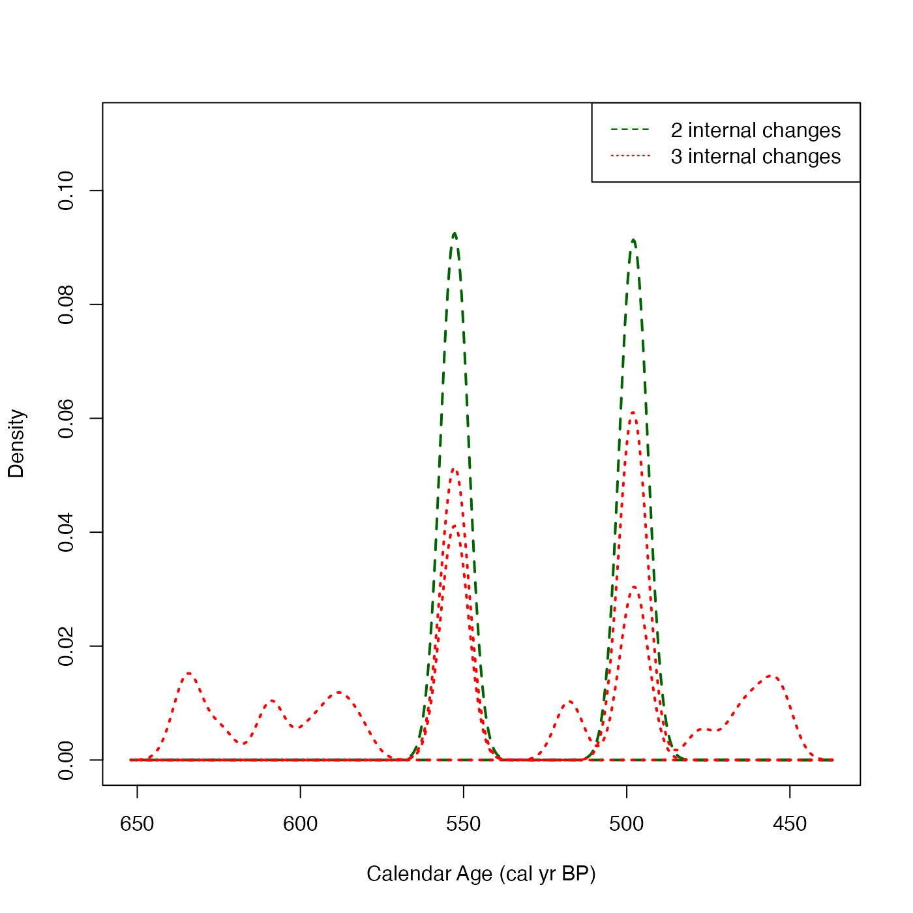
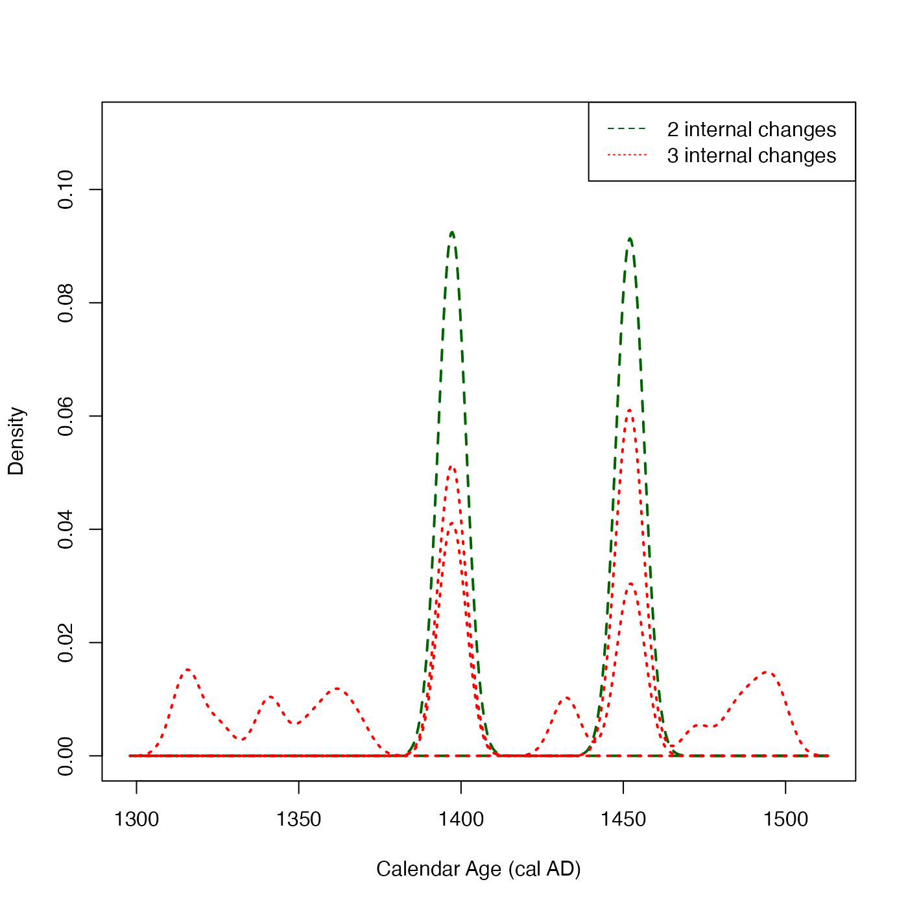

Plot Calendar Ages of Changes in Rate of Sample Occurrence for Poisson Process Model
Source:R/PlotPosteriorChangePoints.R
PlotPosteriorChangePoints.RdGiven output from the Poisson process fitting function PPcalibrate, plot the posterior density estimates for the calendar ages at which there are internal changepoints in the rate of sample occurrence \(\lambda(t)\). These density estimates are calculated conditional upon the number of internal changepoints within the period under study (which is specified as an input to the function).
Having conditioned on the number of changes, n_change, the code will extract all realisations
from the the posterior of the MCMC sampler which have that number of internal changepoints in the
estimate of \(\lambda(t)\). It will then provide density estimates for the (ordered) calendar ages
of those internal changepoints. These density estimates are obtained using a Gaussian kernel.
Note: These graphs will become harder to interpret as the specified number of changepoints increases
For more information read the vignette: vignette("Poisson-process-modelling", package = "carbondate")
Usage
PlotPosteriorChangePoints(
output_data,
n_changes = c(1, 2, 3),
plot_cal_age_scale = "BP",
n_burn = NA,
n_end = NA,
kernel_bandwidth = NA
)Arguments
- output_data
The return value from the updating function PPcalibrate. Optionally, the output data can have an extra list item named
labelwhich is used to set the label on the plot legend.- n_changes
Number of internal changepoints to condition on, and plot for. A vector which can contain at most 4 elements, with values in the range 1 to 6. If not given, then
c(1, 2, 3)will be used.- plot_cal_age_scale
(Optional) The calendar scale to use for the x-axis. Allowed values are "BP", "AD" and "BC". The default is "BP" corresponding to plotting in cal yr BP.
- n_burn
The number of MCMC iterations that should be discarded as burn-in (i.e., considered to be occurring before the MCMC has converged). This relates to the number of iterations (
n_iter) when running the original update functions (not the thinnedoutput_data). Any MCMC iterations before this are not used in the calculations. If not given, the first half of the MCMC chain is discarded. Note: The maximum value that the function will allow isn_iter - 100 * n_thin(wheren_iterandn_thinare the arguments that were given to PPcalibrate) which would leave only 100 of the (thinned) values inoutput_data.- n_end
The last iteration in the original MCMC chain to use in the calculations. Assumed to be the total number of iterations performed, i.e.
n_iter, if not given.- kernel_bandwidth
(Optional) The bandwidth used for the (Gaussian) kernel smoothing of the calendar age densities. If not given, then 1/50th of the overall calendar age range will be used.
Examples
# NOTE: This example is shown with a small n_iter to speed up execution.
# Try n_iter and n_posterior_samples as the function defaults.
pp_output <- PPcalibrate(
pp_uniform_phase$c14_age,
pp_uniform_phase$c14_sig,
intcal20,
n_iter = 1000,
show_progress = FALSE)
# Plot the posterior change points for only 2 or 3 internal changes
PlotPosteriorChangePoints(pp_output, n_changes = c(2, 3))

# Changing the calendar age plotting scale to cal AD
PlotPosteriorChangePoints(pp_output, n_changes = c(2, 3),
plot_cal_age_scale = "AD")
